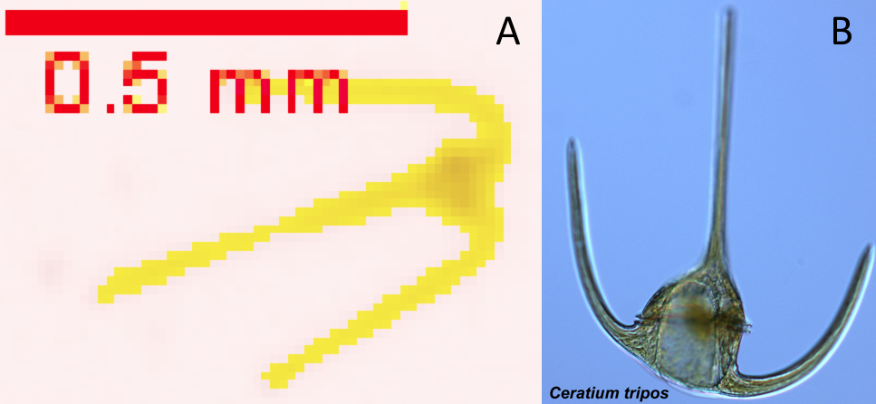
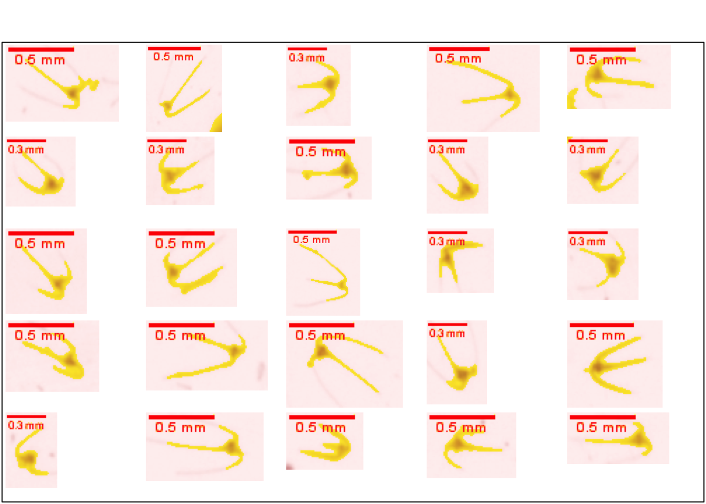
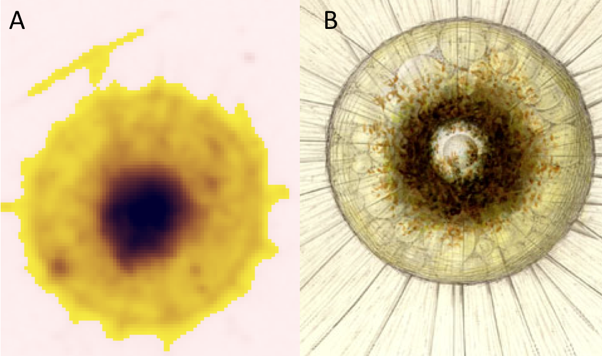
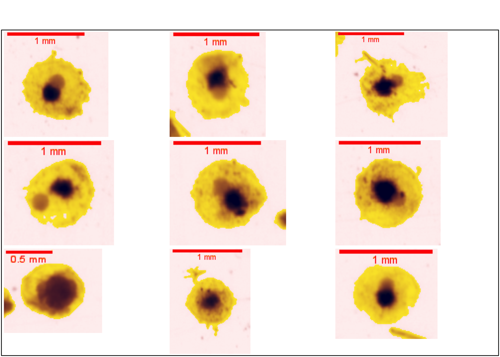
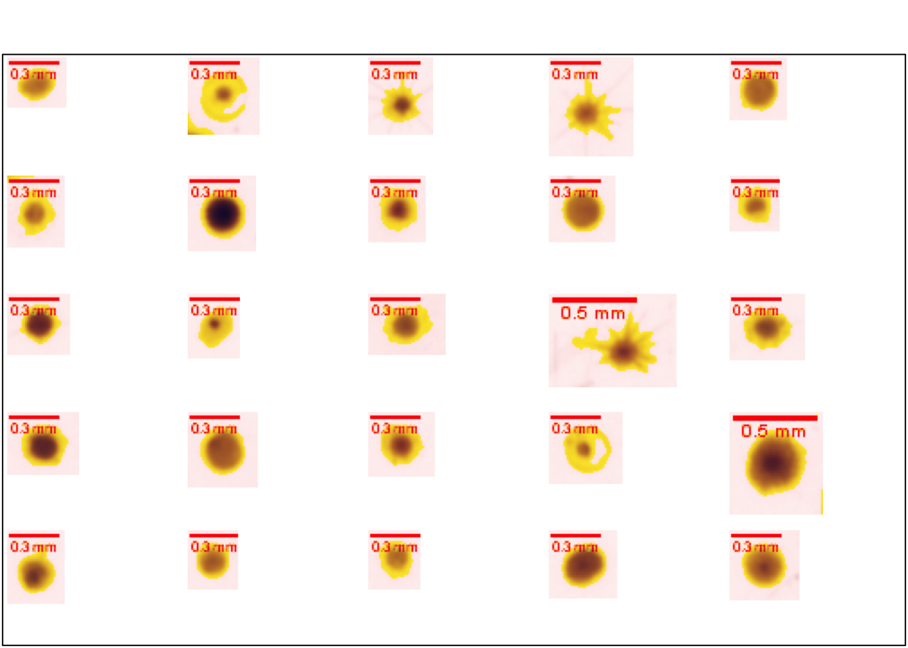
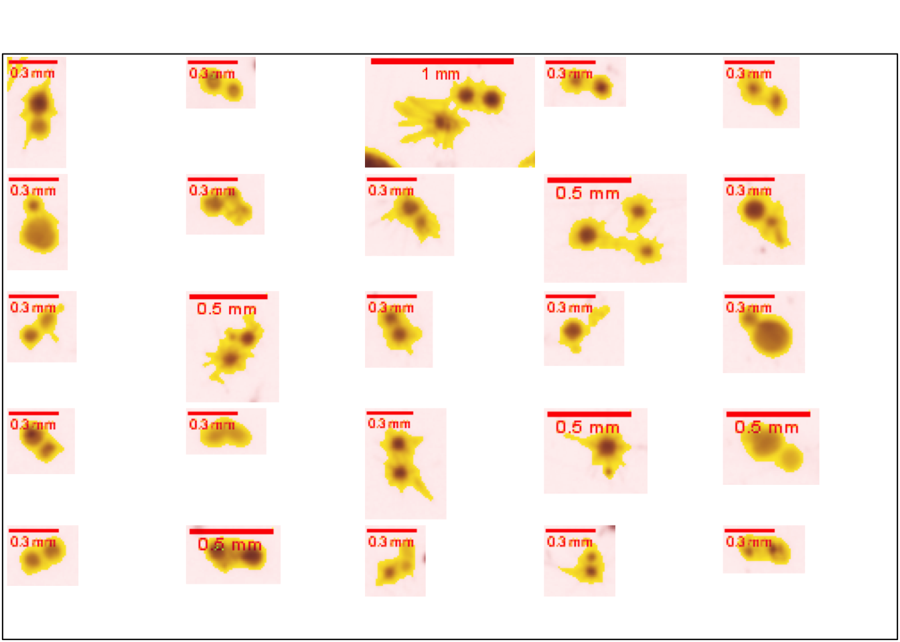

9 Chromista
9.1 Dinoflagellate
Les dinoflagellés ou dinophycées sont des organismes faisant partie du groupe des Alveolata. La moitié des dinoflagellés sont photosynthétiques tandis que l’autre moitié sont des organismes hétérotrophes, ils font donc partie du phytoplancton et du zooplancton et sont soit marin, soit dulçaquicole (Taylor, Hoppenrath, et Saldarriaga 2008).
Les Ceratium ( Figure 9.1 ), organismes unicellulaires biflagellés, sont facilement identifiables par la morphologie de leur carapace tout à fait caractéristique avec 3 cornes aplaties dorso-ventralement (Oliveira, Moura, et Cordeiro-Araújo 2011)

La propose des vignettes supplémentaires de Ceratium.
plot_vignettes(vigns, group = "dinoflagellata", nx = 5, ny = 5)
9.2 Rhizaria
Le clade Rhizaria est un sous-règne de Chromista dont, à l’instar des cnidaires, la classification est toujours débattue. La classification choisie ici sera celle de la plateforme WORMS, vérifiée à l’aide de la classification de Cavalier-Smith qui est une des plus actuelle sur le sujet (Cavalier-Smith, Chao, et Lewis 2018).
L’infra-règne Rhizaria est composé de trois phylums : Cercozoa, Foraminifera et Radiozoa. Quivy, Thomas (2018) a identifié un grand nombre de vignettes d’Aulacantha scolymantha ( Figure 9.3 ). Cet organisme fait partie du phylum des Cercozoa et de l’ordre des Phaeocystida (Horton et al. 2022). C’est un protiste holoplanctonique hétérotrophe d’apparence sphérique et recouvert de tubes radiaux cylindriques faisant de 0,5 à 1 mm de long. L’organisme est constitué au centre d’une capsule contenant l’endoplasme et d’une partie périphérique, le sclaracoma qui est constituée des tubes siliceux squelettiques. Entre ces deux couches se trouve le phaeodium constitué de particules brunes (Quivy, Thomas 2018).

La Figure 9.4 propose des vignettes supplémentaires d’Aulacantha scolymantha.
plot_vignettes(vigns, group = "aulocantha_scolymantha")
Pour le reste des vignettes, au vue de l’immense diversité morphologique de ces organismes et de leurs tailles fortement réduite, le parti pris sera de faire deux autres groupes de vignettes, tout d’abord une classe de Rhizaria au sens général. Ensuite, au vue de la nature anatomique de ces organismes, il est courant qu’ils s’agrègent ensemble sur une vignette, une classe sera donc dédiée à ces agrégats, comme ce fût le cas dans l’étude de Fullgrabe et al. (2020).
La Figure 9.5 propose des vignettes de Rhizaria non identifiés.
plot_vignettes(vigns, group = "rhizaria_nd", nx = 5, ny = 5)
La Figure 9.6 propose des vignettes d’agrégats de Rhizaria.
plot_vignettes(vigns, group = "rhizaria_accretion", nx = 5, ny = 5)